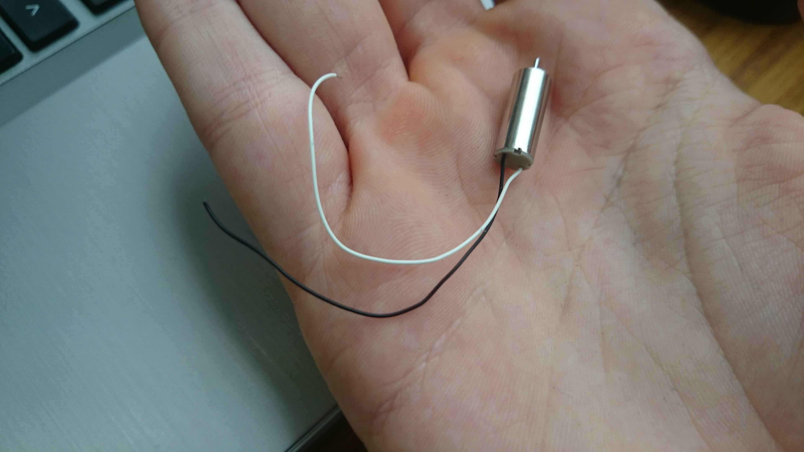

La dernière fois nous vous avons présenté les différents composants que nous avons choisis pour construire le drone. Depuis nous avons reçu un certain nombre de pièces. Avant de tout assemblé nous avons pensé qu'il serait plus pratique de créer des bibliothèques pour chaque composant. Le but de cet article est de présenter la bibliothèque que nous avons écrit pour la gestion des moteurs.
Comme le montre la photo ci-dessous, ces moteurs sont vraiment très petits. Ainsi ils ne produisent pas un couple énorme, mais d'après nos calculs cela devrait être suffisant pour notre drone.
Ce composant est sans aucun doute le plus simple à prendre en main. Il suffit d'envoyer un courant au moteur pour qu'il soit actif. Par conséquent la bibliothèque que nous proposons est vraiment simple. Pour commencer, voici la déclaration de la bibliothèque :
#ifndef Bccm01b_h
#define Bccm01b_h
#include "Arduino.h"
#include <stdint.h>
//Class representing one motor
class Bccm01b {
public:
Bccm01b ( uint8_t pin ); //Constructor
int controlSpeed ( int value ); //Setter speed
int reportSpeed (); //Getter speed
const uint8_t getPin (); //Getter pin
private:
const uint8_t _pin;
int _value; //Speed
};
#endif
On représente donc un moteur par une instance de la classe Bccm01b (qui est le modèle du moteur). La composition de cette classe est assez simple. Un moteur est seulement représenté par une broche et une valeur (liée directement à la vitesse).
Au-delà du constructeur et des accesseurs qui ne possèdent rien de particulier, on se concentrera seulement sur la fonction qui permet de modifier la vitesse. Les moteurs étant reliés à des broches PWM, les valeurs ne peuvent varier qu'entre 0 et 255. Ainsi avant de modifier la vitesse il faut vérifier que la valeur envoyée est bien comprise dans cette plage, si elle ne l'est pas on retourne une erreur à l'utilisateur.
Vous pouvez bien entendu récupérer cette bibliothèque sur notre GitHub.
Pour conclure cet article, voici une vidéo du test de notre bibliothèque. Le test se contente de contrôler un moteur et d'augmenter progressivement sa vitesse, jusqu'à ce qu'elle atteigne sa valeur maximum. Puis on réduit petit à petit la vitesse jusqu'à l'arrêt du moteur. (Ce test est présent dans le même répertoire que notre bibliothèque).
Un prochain article sera dédié à la manipulation des transmetteurs/récepteurs radio.